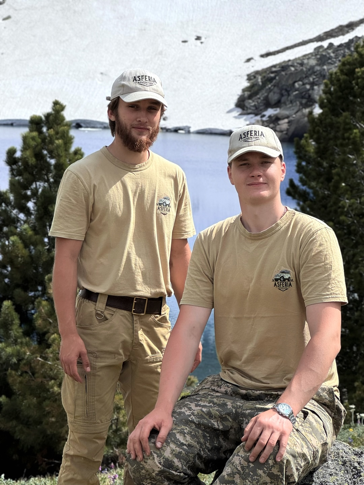

Людей, которые выбирают тур, часто интересует не только маршрут — но и кто стоит за этим всем. Мы не большой холдинг и не франшиза. Поэтому расскажем честно: как всё началось, как устроена наша работа и почему мы делаем именно то, что делаем.
С чего начиналось
Asferia Adventure началась с одного человека и одной машины. Никакого офиса, никакой команды — просто гид, который знал горы и понимал что может показать людям то, чего они не найдут сами.
Потом пришло понимание: формат работает. Люди возвращались, рекомендовали друзьям, просили новые маршруты. Стало понятно — это не просто подработка, это направление которое стоит развивать серьёзно. Так появилась команда: сертифицированные гиды, каждый со своей ролью, продуманная система бронирования и подготовленная техника.
Сегодня мы выезжаем каждые выходные сезона, ведём многодневные экспедиции и разрабатываем маршруты которых нет у других операторов. Но главное осталось тем же — показать людям дикую природу Восточного Казахстана так, как её видим мы.

Почему дикий туризм, а не массовый
Мы не возим автобусами к популярным смотровым площадкам. Это сознательный выбор, а не ограничение.
Массовый туризм хорош для тех мест, которые к нему готовы. Горы Восточного Казахстана — другая история. Здесь красота в том, что никто ещё не приехал до тебя. Нет людей, нет мусора, нет торговцев с сувенирами на каждом повороте. Есть только маршрут, машина, команда и природа.
Мы работаем с малыми группами — от 4 до 8 человек. Это не потому что не можем взять больше. Это потому что с большой группой теряется то главное, ради чего люди вообще едут в горы.
Мы намеренно ищем маршруты подальше от туристических потоков. Богданиха, Чиндагатуй, верхнее Подбелковое — места, до которых обычный турист не доберётся самостоятельно. Именно туда мы и едем.
Наши машины — подготовленные Toyota Land Cruiser и Nissan Patrol с высоким клиренсом и необходимым оборудованием. Спутниковая связь есть на борту всегда. Мы вкладываем в безопасность больше, чем в маркетинг — это и есть наша настоящая ценовая политика.
Дикий туризм не значит неудобный. Горячее питание в полевых условиях, правильное снаряжение, продуманный маршрут без лишней суеты — можно быть в настоящей глуши и при этом не страдать. Это и есть наш формат.
Как устроена наша работа
У каждого в команде своя роль. Гиды — это не просто водители, это люди которые знают маршрут, умеют работать в экстремальных условиях и делают из выезда опыт, а не просто поездку. Отдельно — планирование маршрутов, организация питания, координация с клиентами.
Маршруты мы разрабатываем сами. Некоторые из них — например, к устью реки Богданиха — мы прокладывали самостоятельно. Насколько нам известно, до нас туда в коммерческих целях никто не ездил. Это не преувеличение — это буквально наша работа: находить такие места и делать их доступными для клиентов, оставляя при этом ощущение первооткрывателя.
Бронирование работает просто: запрос через сайт или в директ, подтверждение даты, предоплата. Мы отвечаем сами — не менеджер call-центра, а люди которые будут с вами на маршруте.
Про цены и приоритеты
Мы не самый дешёвый оператор в регионе. И не стремимся им быть. Подготовленная техника, качественное питание, спутниковая связь, сертифицированные гиды — всё это стоит денег. Мы вкладываем в инфраструктуру тура, а не срезаем на ней.
При этом наша цель — не максимизировать прибыль с каждого клиента, а выстраивать то, что мы считаем правильным форматом. Туризм в Восточном Казахстане только начинает развиваться, и от того как он развивается прямо сейчас — зависит то, что здесь останется через десять лет. Нам важно, чтобы это было сделано правильно.